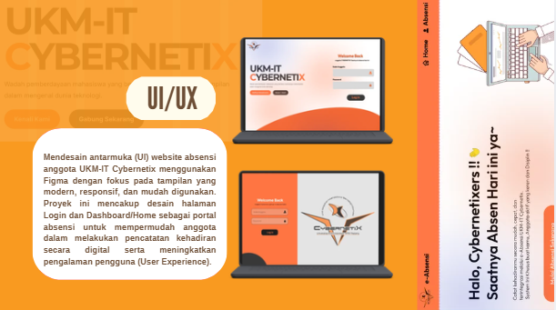
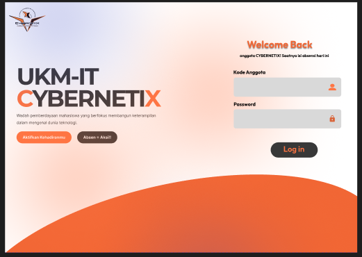
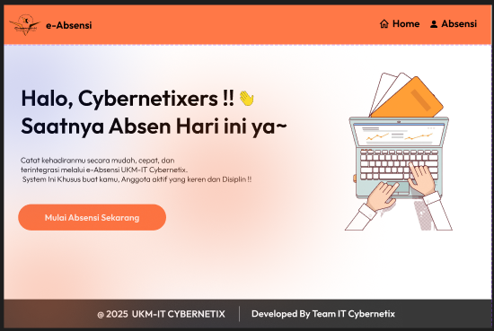
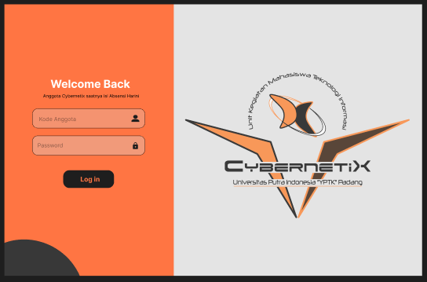
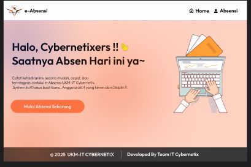

Collaborative Project - UI/UX - Figma Prototype 2025

Desain UI Website Absensi merupakan proyek perancangan antarmuka pengguna (User Interface/UI) yang dibuat untuk sistem absensi UKM-IT Cybernetix Universitas Putra Indonesia "YPTK" Padang.
• UI Designer
• Wireframe Designer
• High-Fidelity UI Designer
• Prototype Designer
Proyek ini dikembangkan sebagai bentuk kontribusi dalam mendukung digitalisasi administrasi organisasi melalui perancangan antarmuka website absensi. Tujuan utama dari proyek ini adalah menciptakan pengalaman pengguna yang sederhana, intuitif, dan mudah digunakan, sehingga proses absensi dapat dilakukan secara lebih efisien oleh seluruh anggota organisasi.
Berikut merupakan tampilan antarmuka yang saya rancang untuk proyek Website Absensi. Galeri ini menampilkan desain Halaman Login dan Dashboard Utama sebagai gambaran konsep awal pengembangan sistem absensi digital.

Login Page

Home Dashboard

Login Page

Home Dashboard
Prototype interaktif dapat diakses melalui tautan Figma di bawah ini. Proyek ini berfokus pada perancangan antarmuka pengguna (UI) dan sudah diimplementasikan sebagai aplikasi dalam organisasi UKM-IT Cybernetix kampus yang berfungsi secara penuh.
View Figma Design